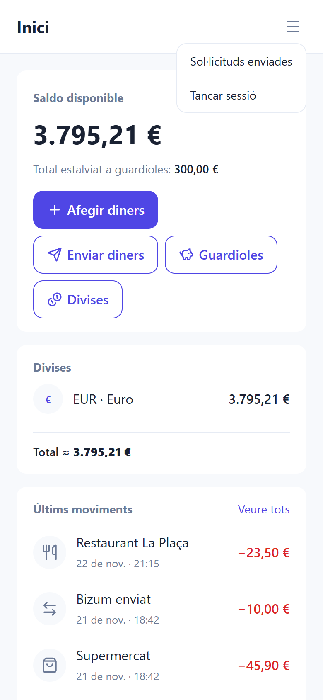
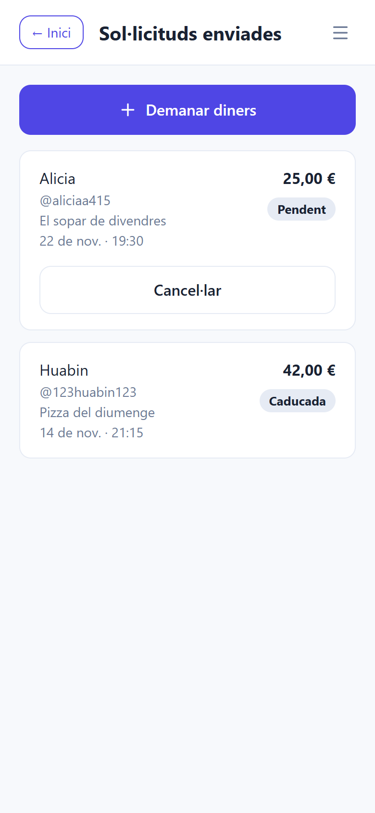
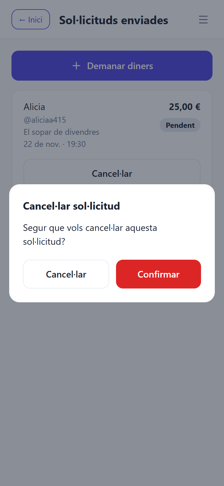
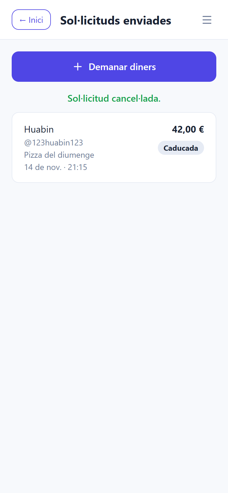
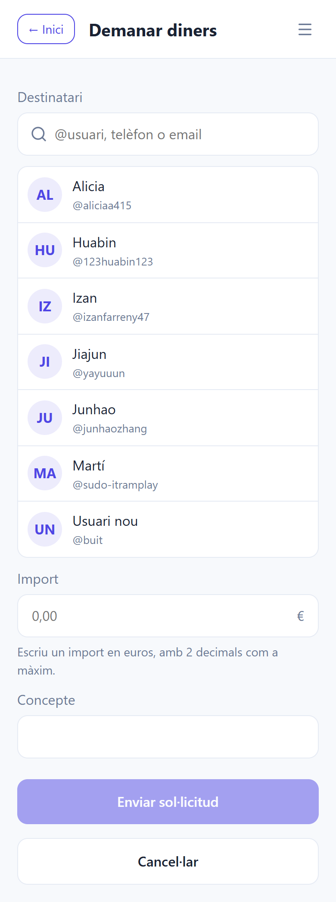
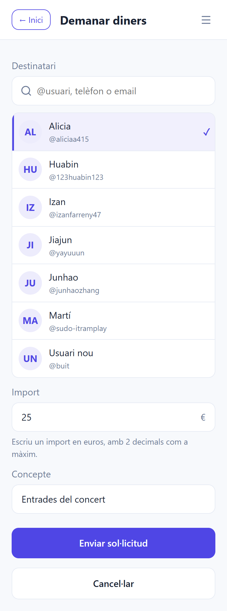
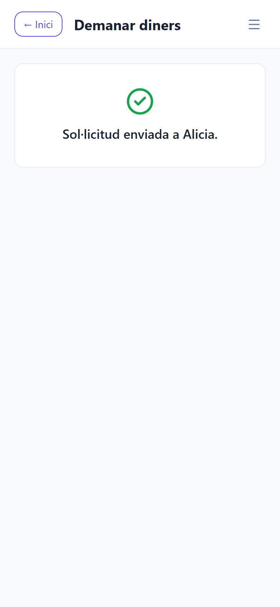
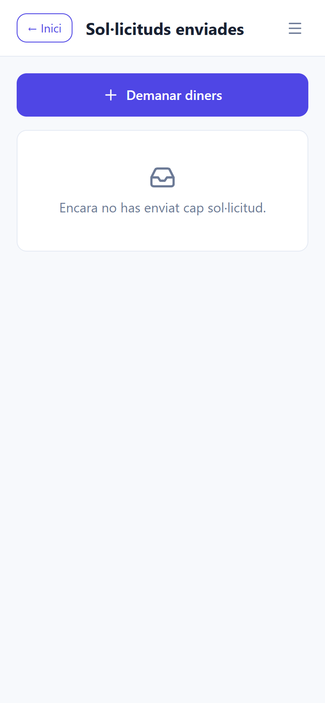

«Sol·licituds enviades».

Una pendent amb «Cancel·lar» i una caducada.


«Sol·licitud cancel·lada.» i la fila ja no hi és.

«Enviar sol·licitud» desactivat.

Alicia triada amb ✓, 25 € i el concepte.

«Sol·licitud enviada a Alicia.».

«Encara no has enviat cap sol·licitud.».
